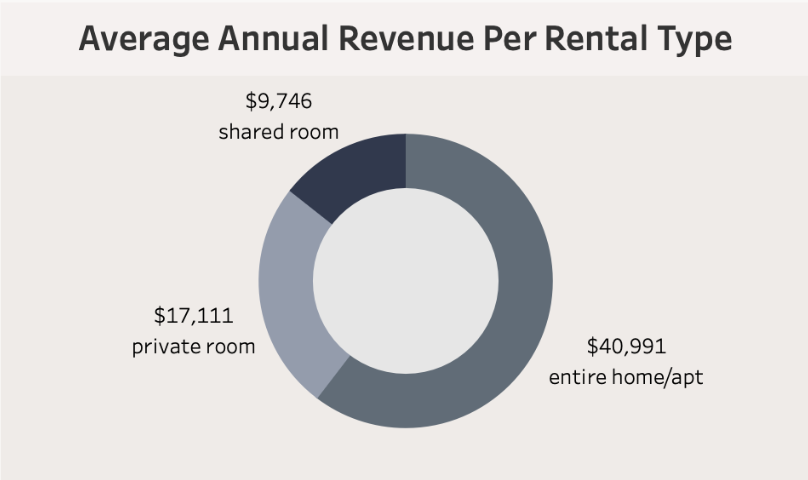
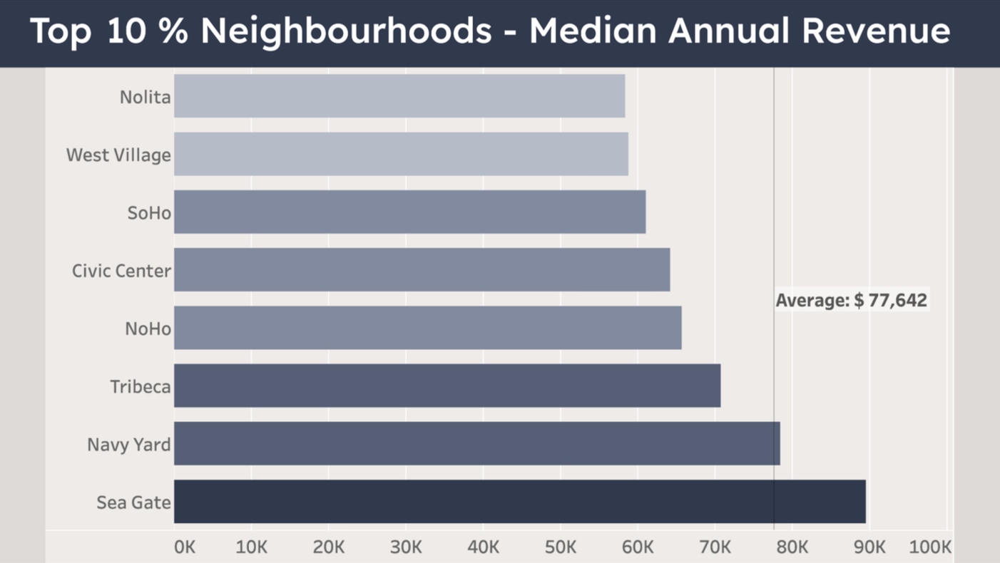

New York City
Rental Insights
This project is centered around data preprocessing in Python, followed by data exploration using SQLite. The findings are presented below in a comprehensive final report and a short video presentation. For added fun and interactivity, I created a dashboard in Tableau.
Summary
This report provides insights into the short-term rental market in New York City, aiming to assist Pillow Palooza, a start-up focused on short-term rentals, in identifying opportunities for growth and success. The analysis focuses on factors such as high revenue, popularity, and untapped supply. The average annual revenue for all rental types is $22,616, with entire homes or apartments generating the highest revenue at $40,991 per year. Manhattan stands out with the highest average annual revenue among boroughs at $38,115, while Queens, Bronx, and Staten Island fall below the average. The report recommends targeting neighborhoods that exceed the average annual revenue in the top 5% for each rental type, considering factors like neighborhood popularity, proximity to attractions, safety, and amenities.
Context
Pillow Palooza aims to disrupt the traditional real estate market by offering short-term rental options for travelers. To achieve this, insights into the New York City short-term rental market are essential. The main objective of this report is to provide valuable information to maximize revenue and occupancy rates for the company's short-term rental properties. To accomplish this, three key questions are addressed: which neighborhoods to invest in, which property types to focus on, and how to price rentals competitively in the market.
Results
The analysis begins by considering high revenue factors, using the metric of Annual Revenue, calculated by multiplying the number of days booked in a year by the price per day. The average annual revenue for all rental types is $29,510. Entire homes or apartments generate the highest revenue at $40,991 followed by private rooms at $17,111 and shared rooms at $9,746.
Shared rooms only account for 2.32% of the total data, while entire homes/apartments make up 52.64% and private rooms make up 45.04%. Given that annual revenue is more than double for entire apartments compared to private rooms, and there is limited data for shared rooms, the focus will be on targeting entire apartments.
When examining average annual revenue by borough, Manhattan stands out with the highest average revenue of $38,115, nearly double the overall average of all boroughs. Brooklyn also performs well with an average of $26,685. However, Queens ($16,899), Bronx ($13,378), and Staten Island ($12,899) fall below the average.
To identify neighborhoods for investment, the report focuses on the top 10% neighborhoods for the entire apartment rental type in the boroughs of Brooklyn and Manhattan. Median annual revenue per listing per neighborhood is used for this analysis to mitigate the impact of extreme rental prices.
The graph shows the median annual revenue for the top 10 % of neighborhoods for the rental type: Entire Apartment/house, Boroughs: Manhattan and Brooklyn.
The following neighborhoods are identified as top performers:
- Sea Gate (Brooklyn) - Annual Revenue: $89,525
- Navy Yard (Brooklyn) - Annual Revenue: $98,475
- Tribeca (Manhattan) - Annual Revenue: $70,765
- Noho (Manhattan) - Annual Revenue: $65,700
- Civic Centre (Manhattan) - Annual Revenue: $64,170
- Soho (Manhattan) - Annual Revenue: $61,047
- West Village (Manhattan) - Annual Revenue: $58,820
- Nolita (Manhattan) - Annual Revenue: $58,400
Next we consider the amount of listings available in the areas with high annual revenue. Our target areas can be identified as those which show potential with many available property listings, high occupancy and high revenue. These include
- West Village
- Soho
- Nolita
- Tribeca
- Noho
Our potentially untapped areas show potential with high revenue, but there aren’t many listings available in these areas. Further analysis of the following areas is needed:
- Civic Centre
- Navy Yard
- Sea Gate
Recommendation:
Based on the analysis, Pillow Palooza should consider investing in the neighborhoods identified as top performers for each rental type, as they demonstrate higher-than-average annual revenue potential. If only one rental type is chosen for initial focus, it would be entire apartments or houses. The boroughs, Manhattan and Brookly show the highest occupancy rate and revenue potential. The neighbourhoods, West Village, Soho, Nolita, Tribeca and Noho have enough data points to identify as top performers in the short rental market, whereas Civic Centre, Navy Yard and Sea Gate show promise as high revenue areas, but they don’t yet have many rentals available. It would be worth investigating if these areas are potentially untapped.
Following these findings we should conduct further research and analysis specific to the target audience's preferences and needs to provide valuable insights for choosing which areas to invest in. Additional factors to consider for analysis include: neighbourhood popularity, proximity to attractions, safety, and amenities specific to the target audience. We will need to validate these findings by cross-referencing with external sources and conducting real-world experiments with a subset of properties.
- Neighbourhood Popularity: Tribeca in Manhattan and Sea Gate in Brooklyn are highly popular among travellers due to their unique attractions, cultural experiences, and vibrant atmosphere, making them desirable destinations for short-term rentals.
- Proximity to Tourist Attractions or Business Centers: Tribeca in Manhattan offers close proximity to popular tourist attractions like the Tribeca Film Festival, trendy restaurants, and upscale shopping areas, while Navy Yard in Brooklyn is near the thriving industrial park and cultural center of Brooklyn Navy Yard, making these neighborhoods attractive to both leisure and business travelers.
- Safety: Manhattan's Tribeca neighborhood and Brooklyn's Sea Gate, being a gated community, are known for their reputation of being safe and well-policed, providing potential guests with an added sense of security.
- Local Amenities: Tribeca and Navy Yard boast a wide range of local amenities, including upscale dining options, boutique shopping, art galleries, and parks, enhancing the overall guest experience and making short-term rentals in these areas more appealing.
- Target Audience Preferences: Different neighborhoods may align more closely with specific target audiences. For families, neighborhoods near parks, playgrounds, and family-friendly attractions would be desirable, while young professionals may prefer neighborhoods with a vibrant nightlife and proximity to trendy bars and restaurants.